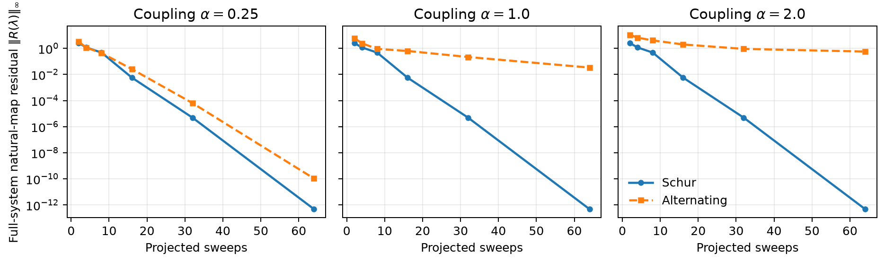

DVI bilateral–unilateral coupling evaluation
Conclusion
At equal projected-sweep count, eliminating the bilateral block before solving the unilateral problem is both more accurate and faster than alternating the two blocks. The advantage grows with coupling strength. In a fallen Unitree G1 with both hands and both feet on the ground, the Schur formulation reduced sideways drift by 13×, the median complementarity residual by 230×, and frame time by 2×.
Why block elimination helps
For bilateral impulses \(\lambda_b\) and unilateral impulses \(\lambda_u\), the linearized constraint velocity is
with \(v_b=0\) and \(0\leq\lambda_u\perp v_u\geq0\). Eliminating \(\lambda_b\) gives the exact reduced operator
The implementation factors \(D_{bb}\) once and applies its inverse by forward and backward substitution. It does not form a matrix inverse. Alternation uses the same factorization, but information between the two blocks advances only once per outer iteration. Schur elimination incorporates that response in every projected unilateral update.
Controlled problem with an exact solution
The synthetic benchmark constructs
where \(D_{bb}\) and \(S\) are symmetric positive definite and the entries of \(C\) scale with a coupling parameter \(\alpha\). Therefore
so the full problem is strictly convex. A mixed active/inactive KKT solution is prescribed first and \(b\) is derived from it. This provides an exact reference for impulse error and avoids judging either method by its own reduced equations.
Both methods start at zero and receive the same number of projected Gauss–Seidel sweeps. Residuals are evaluated in the original full system using the natural map

After 64 projected sweeps:
| Coupling \(\alpha\) | Schur \(\lVert R\rVert_\infty\) | Alternating \(\lVert R\rVert_\infty\) | Schur impulse error | Alternating impulse error |
|---|---|---|---|---|
| 0.25 | 4.83e-13 | 1.07e-10 | 2.26e-14 | 6.33e-12 |
| 1.00 | 4.80e-13 | 3.37e-2 | 2.91e-14 | 2.43e-3 |
| 2.00 | 4.80e-13 | 5.70e-1 | 4.60e-14 | 7.51e-2 |
The reduced operator \(S\) is held fixed, so Schur convergence is independent of \(\alpha\). Alternating convergence degrades as the off-diagonal coupling grows. This isolates the mechanism relevant to articulated systems with several simultaneous contacts.
Fallen-G1 measurement
The G1 starts 0.2 m above the plane with a deterministic 20° pitch about global Y. The fall is along X; displacement along Y is therefore sideways drift. The script requires simultaneous hand-and-foot ground contact and records the body labels, so a run cannot silently measure the standing phase.
The model, collision pipeline, friction, warm start, timestep, direct bilateral solver, eight outer iterations, and two projected sweeps per iteration are identical. Both methods use the same preconditioned projected diagonal \(\lvert D_{ii}\rvert P_i^2\). Only the coupling schedule changes. Drift is measured after 60 frames of settling following the first hand-and-foot contact. Timing uses five 20-frame synchronized trials after the contact-rich rollout.
| Metric | Schur | Alternating | Alternating / Schur |
|---|---|---|---|
| Sideways pelvis drift | 0.150 mm | 1.925 mm | 12.8× |
| Horizontal pelvis drift | 0.249 mm | 2.508 mm | 10.1× |
| Fitted sideways speed | 0.0476 mm/s | 0.542 mm/s | 11.4× |
| Post-contact median \(r_c\) | 9.44e-6 | 2.17e-3 | 230× |
| Post-contact p95 \(r_c\) | 1.34e-4 | 1.76e-1 | 1,311× |
| Median frame time | 67.35 ms | 133.74 ms | 1.99× |
Both runs reached left/right hand and left/right foot contact at frame 44 or earlier. Measurements were made on an NVIDIA GeForce RTX 3080 Laptop GPU with Newton 1.6.0.dev0 and Warp 1.17.0. Timing is hardware-specific; residual and drift comparisons are the primary accuracy evidence. Frame time is an end-to-end measurement: contact counts diverge with the trajectories, so it is not a frozen-matrix microbenchmark.
Repeating the comparison with the historical relaxation \(\omega=1.0\), instead of the branch default \(\omega=1.2\), gives:
| \(\omega=1.0\) metric | Schur | Alternating |
|---|---|---|
| Sideways pelvis drift | 0.002 mm | 2.338 mm |
| Horizontal pelvis drift | 0.127 mm | 2.563 mm |
| Fitted sideways speed | 0.0020 mm/s | 0.574 mm/s |
| Post-contact median \(r_c\) | 4.81e-6 | 2.14e-3 |
| Median frame time | 67.37 ms | 132.56 ms |
The near-zero Schur lateral displacement makes a ratio poorly conditioned, so absolute values are reported. The conclusion does not depend on the relaxation change.
The aggregate solver convergence flag is true for 5% of frames for both methods, mainly because the absolute bilateral residual remains near 6e-3 while the configured tolerance is 1e-5. The table therefore makes the narrower, testable claim of better error reduction under a fixed work budget; it does not claim that every frame reaches the configured tolerance.
Reproduction
From the repository root:
uv run python scripts/evaluate_dvi_block_convergence.py \
--output block.json \
--plot block.png
uv run python scripts/evaluate_kamino_dvi_coupling.py \
--method both \
--omega 1.2 \
--frames 240 \
--timing-frames 20 \
--timing-trials 5 \
--output g1.json
The controlled benchmark uses NumPy and is deterministic. The G1 benchmark
requires a CUDA device and accepts --device. Both emit complete run
configuration and machine-readable metrics. Reference outputs:
controlled problem,
fallen G1, and
fallen G1 at historical relaxation.